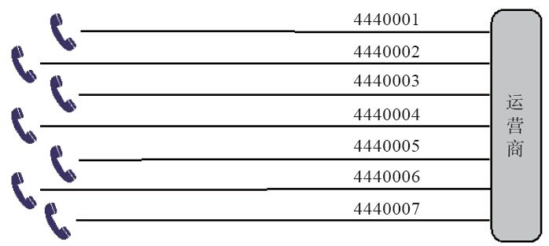
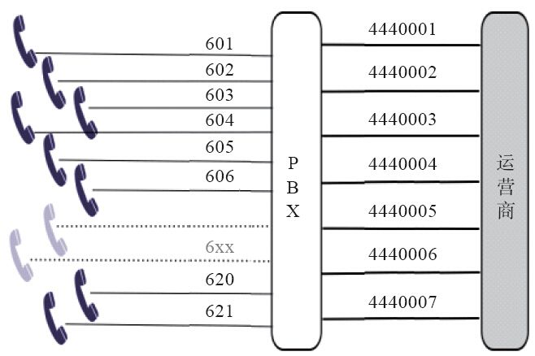

2.3 PBX与中继线
用户或企业PBX要想打通外面的电话，或者外面的电话需要打进来，需要走运营商提供的中继线，以接入到PSTN网上去。理解中继线的概念对于理解PBX以及PSTN是非常重要的，中继的接入方式决定了我们如何拨号，读者在学习中也可以思考一下为什么使用这种拨号方式，我们能如何配置以提供更好的用户体验等。因此，在这里我们单独拿出一节来说明。
下面我们以模拟中继线为例，通过一则故事来说明中继线与PBX的关系。
假设我们刚开了一家公司，需要7部电话，于是向运营商（在PSTN交换机上）申请了7条模拟中继线。前面已经指出，实际上就是7条普通的电话线，只是运营商在PSTN交换机端对我们这7条线（也可以解释为7个号码）做了特殊的数据设置，将其逻辑上分为一个组，并为该组设了一个总机号。我们有幸选到了一个很酷的号码——88888888（它可以是一个虚拟的号码，或者是其中某一条中继线的真实号码）。而其他的中继线号则可能是44440001～44440007。现在，我们把这7条线都接上话机。如果有人呼叫88888888，则PSTN交换机会从7条线中自动选择一条空闲的线路呼入，因此某个电话会就会振铃。如果有多个电话呼入，只要同时呼入的电话不超过7个，我们的电话就都有机会振铃，因而我们可以同时对外为7个人同时提供服务。一般来说，当有电话呼入时，交换机有两种选线策略——顺序选线和循环选线。所谓顺序选线，就是每次都从44440001开始，寻找一条空闲的线路进行呼入；而循环选线则是每次都从上一次呼叫的下一个开始选起，使用这种选线方式，每个话机接到的电话数会比较平均。公司安装的7部电话的结构示意如图2-1所示。

图2-1 运营商为公司安装了7部电话
为维护企业形象，当有人呼出时，不管是从哪个分机呼出，都显示总机号88888888。当然，也可以设置显示单线的号码（如44440004），这个要在PSTN交换机端设置，一旦设置后，用户端不能动态更改。
一个月后，公司发展到21个人，因此需要21部电话。但由于一般不会出现所有人同时都在打电话的情况，故安装21条线有些浪费。因此我们买了一个小交换机，把原来的7条中继线接到小交换机的外线接口上，而把每个人的话机接到小交换机的内线口上，这样，每个人就都有了一个分机号，从601到621，而PSTN端的配置不变，如图2-2所示。当客户打总机号时，PSTN交换机仍然会选择一条线进入我们的小交换机，这时候，选线方式已经不像以前那样重要，因为现在是小交换机在接电话，对它来说，7条线哪条都一样。就这样，小交换机接了电话，并播放“您好，欢迎致电某某公司，请直拨分机号，查号请拨0……”，如果客户按某一分机号，则对应分机振铃，电话接通。

图2-2 小交换机（7条外线，21条内线）
有了小交换机，内部通话就免费了。但出现了另外一个问题，就是如果拨打外线，则需要先拨一个特殊的数字，一般是0或9。有的小交换机会送二次拨号音，即你拿起电话，听到小交换机的拨号音，拨了0之后，则听到外部PSTN交换机的拨号音，表明你可以拨打外线了。总之，小交换机会选择一条空闲的中继线对外呼叫。
上述例子中，21:7称为集线比，即3:1。集线比是由话务量决定的，如果同时通话的人数比较多，那我们可能会把中继线增加到12条，集线比就降为21:12，约为2:1了。
即使增加了线路，也经常会遇到这样的情况：由于打进来的电话太多，占用了太多的线路，经常一个电话都打不出，因此，我们联系运营商，将中继线分为三组，其中4条只进不出，4条只出不进，4条能出能进。在电信术语中，分别叫做单出，单入和双向 [1] ，而北京联通则分别称为发专、受专和双向。当然，这种分配方式降低了总体线路的使用率，为此，我们把每个组都增加1条线，现在中继线总共达到15条。
又过了几天，有客户反映这样的情况，正常上班期间打电话经常无人接听，需要打好几遍；而同时，内部也有人反映往外打电话时有时拨0没反应，再试一次就好了。我们没有处理这种问题的经验，只好请教PBX专家，专家说可能是某条外线断了。因为，如果有一条线断了，当有电话呼入时，交换机仍会向主叫方送回铃音，跟被叫端没接话机是一样的。但到底是哪条线断了，却不好查。由于双方都是自动选线。我们只好将每条线都从小交换机上拔下来，接上话机试一试 [2] ，以确定是哪条线断了。
还算比较幸运，我们找到了断线的号码，联系运营商，很快修好了，把所有线路都插回小交换机，一切恢复正常。
几天后，老板又很幸运地搞到了一个新号码66666666，该号码并未加入中继线组，而是直接扯了根线拉到老板办公桌上。为了能拨打内线，他不得不在办公桌上放两部电话，另一部专门打内线。后来技术人员小张仔细阅读了PBX的说明书，发现该小交换机功能还比较强，就进行了以下设置：将66666666这个号码接到小交换机上，仍给老板一个内线电话，同时在小交换机上进行设置，只有老板打出时才走66666666这个端口；而对于打入的电话，也不播放“欢迎致电XX公司…”，而是直接向老板电话振铃。这种拨入方式叫做DID，即对内直接呼叫（Direct Inbound Dial）。
接下来，随着公司的发展，加入的中继线条数越来越多，维护起来更加复杂。比如，像我们刚才遇到的情况，其中有一条线断了，在很长的一段时间内根本不知道，即使知道了，要找到是哪条线也非常麻烦。后来，当公司发展到100人的时候，购买了新设备，并将模拟中继线换成了两条E1数字中继线，可同时支持60路通话。
公司发展一帆风顺，电话量也越来越多，公司有了很多分支机构，也有了更多客户，需要更复杂的语音菜单及更智能的电话分配策略，而更换专门的电话系统不仅价格昂贵，而且跟现有业务系统进行集成难度也很大。在综合考虑了多种解决方案以后，技术人员开始学习FreeSWITCH……
[1] 注意，对电信部门来说，出和入跟我们是相反的，因为我们（小交换机）的出，对应它们（PSTN交换机）的入。
[2] 某些小交换机也支持指定端口拨打功能，即在拨打真正号码前先拨几个特殊的数字，可以选择从指定的线路出去。实际上还有一种方法：我们知道，一般来说，每条单线的号码也都是可以呼入的，只是外人不知道而已，故只需要依次拨打所有的单线号码就可以知道是哪条线断了。当然，这依赖于PSTN交换机端的设置，有些城市（甚至同一城市不同的交换机都有不同的设置）默认设置单线是不允许呼入的。